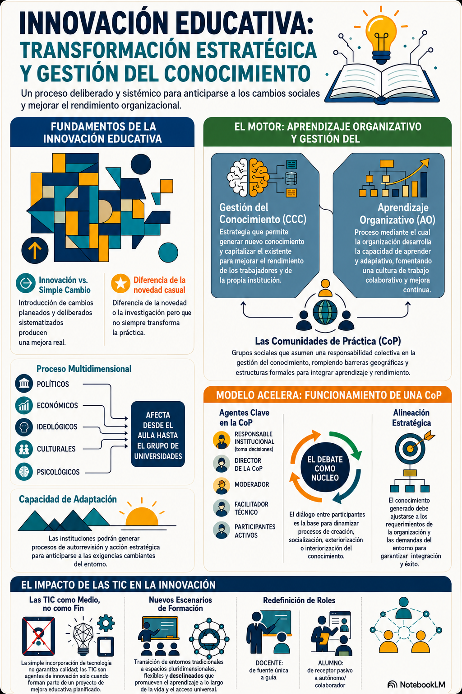

¿Qué significa realmente innovar en la educación hoy?
Te compartimos de manera oficial la infografía académica titulada "Innovación Educativa: Transformación Estratégica y Gestión del Conocimiento". Este recurso didáctico de síntesis es clave para comprender que la verdadera innovación pedagógica no ocurre de manera casual o improvisada; representa un cambio planificado y sistemático que impacta transversalmente desde la dinámica del aula hasta las grandes estructuras institucionales de las escuelas.
El material es un mapa mental visual excelente para guiarnos por los nuevos horizontes de la gestión del saber. Haz clic en la imagen a continuación para abrir la infografía en el visor interactivo (Lightbox) a pantalla completa y hacer zoom de alta resolución:

Los Tres Ejes Fundamentales de la Innovación
A través de este esquema estructurado, abordamos tres grandes ejes conceptuales de gran envergadura académica:
• Los Fundamentos de la Innovación: La distinción crítica entre realizar un simple cambio operativo superficial y emprender una auténtica innovación estructurada que mejore significativamente la práctica formativa a largo plazo.
• El Motor de Cambio Organizativo: Cómo la adecuada gestión del conocimiento colectivo y la creación de comunidades de aprendizaje docente colaborativo impulsan a las organizaciones escolares a adaptarse ágilmente a los entornos complejos contemporáneos.
• El Impacto e Integración de las TIC: El inmenso reto de utilizar las tecnologías de la información no como un fin instrumentalista en sí mismas (espejismo tecnológico), sino como el medio o escenario dinámico interactivo idóneo para que el estudiante sea un co-constructor autónomo y el docente, su mejor guía y orientador reflexivo.
Reflexión de Cierre del Blog
Con esta octava entrada cerramos con orgullo el ciclo reflexivo de nuestro blog educativo "Ambientes Digitales". Agradecemos infinitamente tu lectura, tu navegación activa por el mapa interactivo, la visualización del acordeón del visor PPT, y tus respuestas en el videojuego de Gurú.
Esta travesía escolar nos demuestra que innovar en la educación no reside en la adquisición de la última tecnología de moda, sino en la calidez, la empatía y la estructura didáctica reflexiva con la que los docentes tejemos puentes significativos con la vida y la autonomía intelectual de nuestros niños.
Discusión Académica